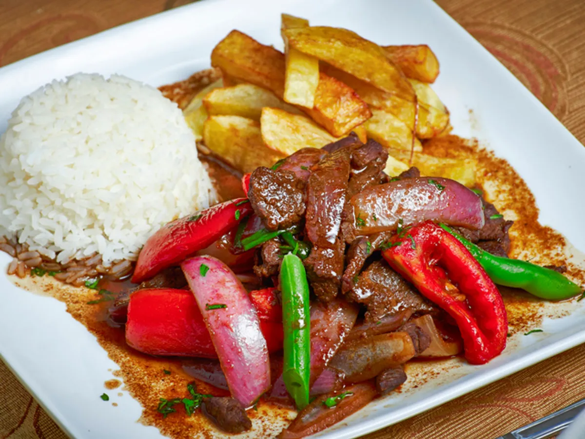

Lomo saltado

Lomo saltado recipe
Lomo saltado is a popular, traditional Peruvian dish, a stir fry that typically combines marinated strips of sirloin (or other beef steak)
with onions, tomatoes, french fries, and other ingredients; and is typically served with rice. The dish originated as part of
the chifa tradition, the Chinese cuisine of Peru, though its popularity has made it part of the mainstream culture.
Ingredients
for 4 servings
- 1 lb sirloin steak(455 g), cut into strips
- salt, to taste
- black pepper, to taste
- ½ red onion, sliced
- 1 medium tomato, sliced
- 2 cloves garlic, minced
- 11 tablespoon aji amarillo paste
- 2 tablespoons soy sauce
- 1 tablespoon white vinegar
- 1 tablespoon fresh cilantro, chopped
- 1 lb french fries(455 g), cooked, hot
- white rice, cooked, for serving, optional
Instructions
- Heat 1 tablespoon of oil in a large pan over high heat. Add the steak, season with salt and pepper, and cook until browned, 5-6 minutes.
Remove from the pan.
- Heat the remaining tablespoon of oil in the same pan, then add the red onion and cook for about 5 minutes,
until softened and browned. Add the tomato, garlic, and aji amarillo paste, and cook for another 5-7 minutes,
until the tomatoes have released some of their juices, but are still intact.
- Add the soy sauce and vinegar and stir to combine, let cook for 1 minute.
- Add the steak, fries, and cilantro. Toss gently to coat the fries in the sauce.
- Serve with rice, if desired.
- Enjoy!